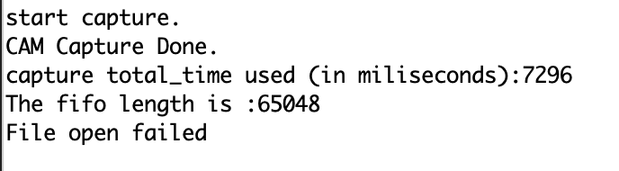
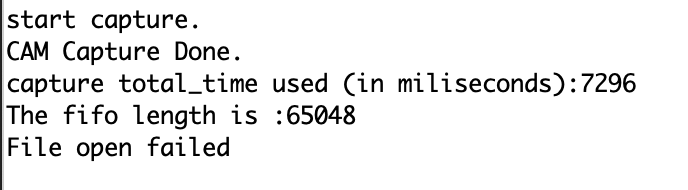

Final Project Process Page
April 13, 2021:
This week, I focused on getting Unity ML Agents up and running. I followed this
installation documentation
on the software's GitHub repository, installing Unity Hub, Unity, and the ML-Agents library.
However, upon attempting to load the 3D Ball example mentioned in this beginner tutorial I received a multitude of compiler warnings.

Currently, I am attempting to work through those, and I believe it is because I was not using the same version of ML-Agents between the package repository and the Unity Package Manager. These files are all very large, so installation takes a while, but I will update further once this issue is resolved and I can play the example simulation!
April 20, 2021:
After coming across this discussion thread I realized my error was due to the fact that I needed the ml-agent git repo and it's associated package.json files, which had to be added in Unity under packages manually.
The result, after removing the Tests folder, is that I can now run sample environments without issue!
My next step will be to get this GitHub repo up and running, although I will need to replace the objects most likely. For exapmle, I will likely be using a ball rather than a puck since I likely won't have a super slick surface to work with. I will also need to considerthe real world effects of friction as well as the force/speed that I can achieve with the stepper motor carriages. If necessary, I might need to change to an xy-plotter design for more fluid motion, although I will need to weigh down the "hockey sticks" somehow. April 27, 2021:
This week, I identified the major pieces of my project moving forward to create a comprehensive plan of action for my air hockey project. Here are the main points:
First, puck position sensing. After discussing several options with Nathan, I decided that the easiest method to detect the puck's position and respond to it would be through using a camera and image-matting with OpenCV. This would give faster results than capacitive sensing alternatives. The issue for me is that the ESP32-CAM is not working, so I needed to see if I could get images from my ArduCAM with my available boards. This is the issue I focused on debugging this week.
Second, the "hockey stick" using a linear carriage. I will need to connect two linear carriages in order to achieve xy-positioning to respond to the puck. To conserve materials, I will only make one automated "player" and I will serve as the human opponent. If there is too much friction still with this setup, as experienced by some of my classmates, I may default to experimenting with xy-plotter design A lot of experimentation will be necessary to see what maximum velocity I can achieve as well as how quickly the pipeline can respond to changes in puck positioning.
This week, I will attempt to unify these pieces into a simple design - having the automated player detect the puck position and move in-line with it to block it from hitting the opposite wall of the setup. With sufficient time, I will replace this with an RL trained model to determine commands.
My bill of materials is as follows: 1.
This week I focused on getting the ArduCAM up and running with a board.
Firstly, I attempted to connect it to the Metro using this pin connection scheme:

I installed the necessary libraries using this GitHub repo
I was getting some issues running the setup lines, which verified proper pin connections, etc. I used the following code to ensure that i2c communication was working, as per this discussion thread's suggestion.
This was working, but after some additional error, I realized the SPI connection was failing using the digital pins since I needed to use the Metro's SCK, MISO, and MOSI-specific pins. However, the example sketches that came with the library were still failing upon attempting to send information between camera and board, and after doing some research, I realized that the camera worked best with the tested Arduino Uno board, and would also work with the Arduino Nano BLE Sense that I had, but not an Adafruit board. Here's what the final setup looked like after doing the replacement:

After reloading the 2D capture example from the ArduCAM library, with the camera now hooked up to the Nano, I successfully got image capture! Although this example, wanted me to save the result to an SD card connected on Pin 9, I was able to get successful capture and can use the remaining lines to transfer the image bytes from the buffer array to some other display. The ArduCAM has a built in host system for viewing these images, but from my research and this discussion thread it seems that it only works on Windows. However, I've worked with this camera before to successfully capture and classify images with TFlite, so I think with some work on transferring the data between devices, I should be able to visualize and latter apply an OpenCV filter for a certain colors down the line. The code for image capture is below:
Here are the stats from the capture:  It seems that capture takes around 7 seconds, which is definitely not great. I will need to see if this can be improved or if I will need to embed an accelerometer on the puck or use a different camera (IPhone camera?) to get the data I need.
However, upon attempting to load the 3D Ball example mentioned in this beginner tutorial I received a multitude of compiler warnings.
Currently, I am attempting to work through those, and I believe it is because I was not using the same version of ML-Agents between the package repository and the Unity Package Manager. These files are all very large, so installation takes a while, but I will update further once this issue is resolved and I can play the example simulation!
April 20, 2021:
After coming across this discussion thread I realized my error was due to the fact that I needed the ml-agent git repo and it's associated package.json files, which had to be added in Unity under packages manually.
The result, after removing the Tests folder, is that I can now run sample environments without issue!
My next step will be to get this GitHub repo up and running, although I will need to replace the objects most likely. For exapmle, I will likely be using a ball rather than a puck since I likely won't have a super slick surface to work with. I will also need to considerthe real world effects of friction as well as the force/speed that I can achieve with the stepper motor carriages. If necessary, I might need to change to an xy-plotter design for more fluid motion, although I will need to weigh down the "hockey sticks" somehow. April 27, 2021:
This week, I identified the major pieces of my project moving forward to create a comprehensive plan of action for my air hockey project. Here are the main points:
First, puck position sensing. After discussing several options with Nathan, I decided that the easiest method to detect the puck's position and respond to it would be through using a camera and image-matting with OpenCV. This would give faster results than capacitive sensing alternatives. The issue for me is that the ESP32-CAM is not working, so I needed to see if I could get images from my ArduCAM with my available boards. This is the issue I focused on debugging this week.
Second, the "hockey stick" using a linear carriage. I will need to connect two linear carriages in order to achieve xy-positioning to respond to the puck. To conserve materials, I will only make one automated "player" and I will serve as the human opponent. If there is too much friction still with this setup, as experienced by some of my classmates, I may default to experimenting with xy-plotter design A lot of experimentation will be necessary to see what maximum velocity I can achieve as well as how quickly the pipeline can respond to changes in puck positioning.
This week, I will attempt to unify these pieces into a simple design - having the automated player detect the puck position and move in-line with it to block it from hitting the opposite wall of the setup. With sufficient time, I will replace this with an RL trained model to determine commands.
My bill of materials is as follows: 1.
This week I focused on getting the ArduCAM up and running with a board.
Firstly, I attempted to connect it to the Metro using this pin connection scheme:
I installed the necessary libraries using this GitHub repo
I was getting some issues running the setup lines, which verified proper pin connections, etc. I used the following code to ensure that i2c communication was working, as per this discussion thread's suggestion.
#include
void setup()
{
Wire.begin();
Serial.begin(9600);
Serial.println("\nI2C Scanner");
}
void loop()
{
byte error, address;
int nDevices;
Serial.println("Scanning...");
nDevices = 0;
for(address = 1; address < 127; address++ )
{
// The i2c_scanner uses the return value of
// the Write.endTransmisstion to see if
// a device did acknowledge to the address.
Wire.beginTransmission(address);
error = Wire.endTransmission();
if (error == 0)
{
Serial.print("I2C device found at address 0x");
if (address<16)
Serial.print("0");
Serial.print(address,HEX);
Serial.println(" !");
nDevices++;
}
else if (error==4)
{
Serial.print("Unknow error at address 0x");
if (address<16)
Serial.print("0");
Serial.println(address,HEX);
}
}
if (nDevices == 0)
Serial.println("No I2C devices found\n");
else
Serial.println("done\n");
delay(5000); // wait 5 seconds for next scan
}
This was working, but after some additional error, I realized the SPI connection was failing using the digital pins since I needed to use the Metro's SCK, MISO, and MOSI-specific pins. However, the example sketches that came with the library were still failing upon attempting to send information between camera and board, and after doing some research, I realized that the camera worked best with the tested Arduino Uno board, and would also work with the Arduino Nano BLE Sense that I had, but not an Adafruit board. Here's what the final setup looked like after doing the replacement:
After reloading the 2D capture example from the ArduCAM library, with the camera now hooked up to the Nano, I successfully got image capture! Although this example, wanted me to save the result to an SD card connected on Pin 9, I was able to get successful capture and can use the remaining lines to transfer the image bytes from the buffer array to some other display. The ArduCAM has a built in host system for viewing these images, but from my research and this discussion thread it seems that it only works on Windows. However, I've worked with this camera before to successfully capture and classify images with TFlite, so I think with some work on transferring the data between devices, I should be able to visualize and latter apply an OpenCV filter for a certain colors down the line. The code for image capture is below:
#include
#include
#include
#include
#include "memorysaver.h"
//This demo can only work on OV5640_MINI_5MP_PLUS or OV5642_MINI_5MP_PLUS platform.
#if !(defined (OV5640_MINI_5MP_PLUS)||defined (OV5642_MINI_5MP_PLUS))
#error Please select the hardware platform and camera module in the ../libraries/ArduCAM/memorysaver.h file
#endif
#define FRAMES_NUM 0x06
// set pin 7 as the slave select for the digital pot:
const int CS = 7;
//#define SD_CS 9
bool is_header = false;
int total_time = 0;
#if defined (OV5640_MINI_5MP_PLUS)
ArduCAM myCAM(OV5640, CS);
#else
ArduCAM myCAM(OV5642, CS);
#endif
uint8_t read_fifo_burst(ArduCAM myCAM);
void setup() {
// put your setup code here, to run once:
uint8_t vid, pid;
uint8_t temp;
#if defined(__SAM3X8E__)
Wire1.begin();
#else
Wire.begin();
#endif
Serial.begin(115200);
Serial.println(F("ArduCAM Start!"));
// set the CS as an output:
pinMode(CS, OUTPUT);
digitalWrite(CS, HIGH);
// initialize SPI:
SPI.begin();
//Reset the CPLD
myCAM.write_reg(0x07, 0x80);
delay(100);
myCAM.write_reg(0x07, 0x00);
delay(100);
while(1){
//Check if the ArduCAM SPI bus is OK
myCAM.write_reg(ARDUCHIP_TEST1, 0x55);
temp = myCAM.read_reg(ARDUCHIP_TEST1);
if(temp != 0x55)
{
Serial.println(F("SPI interface Error!"));
delay(1000);continue;
}else{
Serial.println(F("SPI interface OK."));break;
}
}
#if defined (OV5640_MINI_5MP_PLUS)
while(1){
//Check if the camera module type is OV5640
myCAM.rdSensorReg16_8(OV5640_CHIPID_HIGH, &vid);
myCAM.rdSensorReg16_8(OV5640_CHIPID_LOW, &pid);
if ((vid != 0x56) || (pid != 0x40)){
Serial.println(F("Can't find OV5640 module!"));
delay(1000); continue;
}else{
Serial.println(F("OV5640 detected."));break;
}
}
#else
while(1){
//Check if the camera module type is OV5642
myCAM.rdSensorReg16_8(OV5642_CHIPID_HIGH, &vid);
myCAM.rdSensorReg16_8(OV5642_CHIPID_LOW, &pid);
if ((vid != 0x56) || (pid != 0x42)){
Serial.println(F("Can't find OV5642 module!"));
delay(1000);continue;
}else{
Serial.println(F("OV5642 detected."));break;
}
}
#endif
//Initialize SD Card
//while(!SD.begin(SD_CS))
//{
// Serial.println(F("SD Card Error!"));delay(1000);
//}
//Serial.println(F("SD Card detected."));
//Change to JPEG capture mode and initialize the OV5640 module
myCAM.set_format(JPEG);
myCAM.InitCAM();
myCAM.set_bit(ARDUCHIP_TIM, VSYNC_LEVEL_MASK);
myCAM.clear_fifo_flag();
myCAM.write_reg(ARDUCHIP_FRAMES, FRAMES_NUM);
}
void loop() {
// put your main code here, to run repeatedly:
myCAM.flush_fifo();
myCAM.clear_fifo_flag();
#if defined (OV5640_MINI_5MP_PLUS)
myCAM.OV5640_set_JPEG_size(OV5640_320x240);delay(1000);
#else
myCAM.OV5642_set_JPEG_size(OV5642_320x240);delay(1000);
#endif
//Start capture
myCAM.start_capture();
Serial.println(F("start capture."));
total_time = millis();
while ( !myCAM.get_bit(ARDUCHIP_TRIG, CAP_DONE_MASK));
Serial.println(F("CAM Capture Done."));
total_time = millis() - total_time;
Serial.print(F("capture total_time used (in miliseconds):"));
Serial.println(total_time, DEC);
total_time = millis();
read_fifo_burst(myCAM);
total_time = millis() - total_time;
Serial.print(F("save capture total_time used (in miliseconds):"));
Serial.println(total_time, DEC);
//Clear the capture done flag
myCAM.clear_fifo_flag();
delay(5000);
}
uint8_t read_fifo_burst(ArduCAM myCAM)
{
uint8_t temp = 0, temp_last = 0;
uint32_t length = 0;
static int i = 0;
static int k = 0;
char str[8];
File outFile;
byte buf[256];
length = myCAM.read_fifo_length();
Serial.print(F("The fifo length is :"));
Serial.println(length, DEC);
if (length >= MAX_FIFO_SIZE) //8M
{
Serial.println("Over size.");
return 0;
}
if (length == 0 ) //0 kb
{
Serial.println(F("Size is 0."));
return 0;
}
Here are the stats from the capture:  It seems that capture takes around 7 seconds, which is definitely not great. I will need to see if this can be improved or if I will need to embed an accelerometer on the puck or use a different camera (IPhone camera?) to get the data I need.